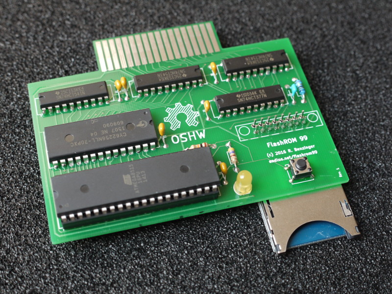
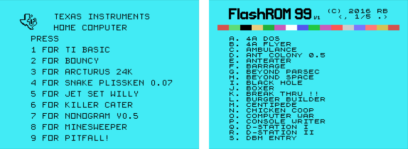
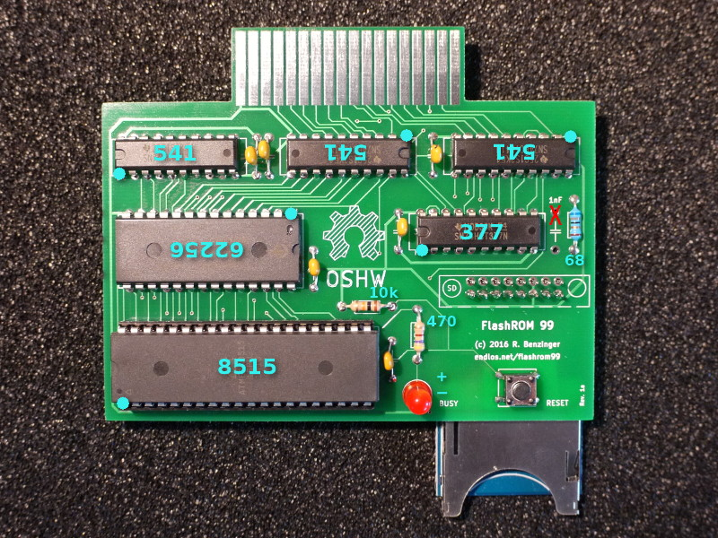
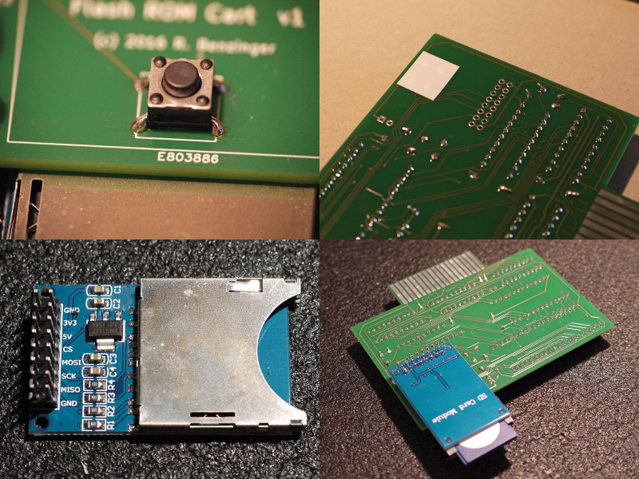

The TI 99/4A Flash ROM Cartridge, or FlashROM 99 for short, is a cartridge for the TI 99/4A home computer that allows for running ROM cartridge images stored on an SD card.

The FlashROM 99 supports ROM-only images of up to 32K that use the
write-to->60xx bank switching scheme. It will not work with programs
using GROMs or CRU-based bank switching. The cartridge does not require the
Peripheral Expansion Box and runs on both PAL and NTSC consoles.
The project homepage is hosted at GitHub.
FlashROM 99 is released as Open Source Hardware under the CERN OHL license and the GNU GPL license. Both hardware design files and firmware sources are available on GitHub.
Using the FlashROM 99 is simple and doesn't require and special hardware or software.
To begin, copy up to 171 cartridge image files onto an SD or SDHC card. Switch off the TI 99 and plug in the FlashROM 99, then insert the SD card into the FlashROM 99. Switch on the TI 99 and wait until the activity indicator on the FlashROM 99 is no longer lit.
Press any key to bring up the TI menu screen. You should see the list of
images found on the SD card. If the SD card contains more than 8 images, a
FLASHROM 99 entry is shown instead. Selecting this entry starts an image
browser where you can page through the list of available images with ,,
., SPACE, and number keys.

Select the image you want to run. The screen will show a loader animation while the image loads. Once the image has been loaded, it will run automatically. The SD card is now no longer required and may be removed.
If only one image is found on the SD card, it is loaded immediately without the need to select it first.
If you want to run a different program from the SD card, reset the TI 99 by
pressing FCTN-= and then reset the FlashROM 99 by pushing the reset
button. If you do not reset the FlashROM 99, the TI menu will show only the
previously selected image. Alternatively, you can power cycle the console,
which will reset both TI 99 and FlashROM 99.
For detailed usage information please refer to the FlashROM 99 homepage.
The GitHub repository contains all hardware design files and software sources required to build the FlashROM 99.
To assemble the FlashROM 99 you need the following components:
The FlashROM 99 board was designed with KiCad, a cross platform and
open source electronics design automation suite. The design files are
stored in pcb/.
To simplify the board layout, the design uses an inexpensive SD module that
is readily available online. Searching for SD card Arduino should give
you plenty of hits, including Amazon, ebay, and Pollin. Make sure to pick a
module that matches the pin-out of the reference module shown below. Note
that the 3.3V input is not used, so any substitutes must be powered by 5V.
You can use any kind of single color LED, but you may have to adjust the 470 Ohm resistor if you choose anything other than red or yellow.
The push button is used to reset the board and will be pushed frequently. You might choose an angled button if you prefer to push horizontally instead of vertically. This will also put less stress on the cart connector.
When assembling the board make sure to place all ICs properly oriented -- some ICs are upside down! On the board, the location of pin 1 is indicated by a small line in the IC outline. Socketing the ATmega allows for future software updates. It is best not to socket the 541s, however, as this will make inserting the assembled cart into the TI 99 more difficult.

The push button is best soldered to the top of the board so that the bottom area remains as smooth as possible. After the button is soldered, put some insulating tape on its bottom contacts to avoid interference with the SD module.

Insert the SD module from the bottom and solder either one row of connectors top so that the metal part of the module is flush with the board. Some SD modules have a crooked connector, though, so that a small gap may remain.
If you don't want to build the board yourself feel free to contact the developer for available sources.
The software for the ATmega 8515 consists of two components. The avr/
folder contains the microcontroller logic for accessing the SD card, filling
the SRAM chip, and controlling the TI bus.
The ti/ folder contains TI 99 assembly sources for the image menu and the
image browser. The assembled TMS 9900 machine code is embedded in the
microcontroller code and loaded into RAM during operation.
To build the software, you first need to assemble the menu and browser
program with xas99 and convert the generated machine code into C
code:
$ cd ti/
$ xas99.py -b -R -I <xdt99>/lib menu.a99
$ mkmenu.py
Now you can compile the microcontroller code in avr/. The folder contains
a Makefile for avr-gcc that will make compilation trivial.
$ cd avr/
$ make
As an option, you can enable multi-file functionality in the Makefile.
This feature, however, will severely extend the scan time for SD cards with
many images. Only enable multi-file if you plan to use the FlashROM 99 with
no more than about two dozenzs of images per SD card. To compile with
multi-file, you may have to disable FAT16 support in avr/lib/pffconf.h in
case the executable gets too large.
The build yields a .hex file that you can flash to the ATmega 8515 using
avrdude or your programmer of choice:
$ avrdude -p atmega8515 -P /dev/ttyACM0 -c stk500 -U flash:w:flashrom99.hex
Additionally, you need to program the lower fuse bits of the 8515 so that it runs at 8 MHz:
$ avrdude -p atmega8515 -P /dev/ttyACM0 -c stk500 -U lfuse:w:0xe4:m
If you're using a different tool chain make sure to set CKSEL3..0 in the
lower fuse byte to 0100. (Note that 0 means "programmed", and 1 means
"unprogrammed"). You can verfify that you're running at the right clock
speed by resetting the FlashROM 99 with no SD card inserted: The LED should
blink about once per second.
Finally, make sure that the bootloader is disabled by checking if higher
fuse bits BOOTSZ1, BOOTSZ0, and BOOTRSET are all set to 1. This
should be the default for new 8515s.
In the end, the lower, higher, and extended fuse bytes should have values
E4, FF, and D9, respectively.
The TI 99/4A Flash ROM Cartridge is Open Source Hardware released under the CERN OHL license, in the hope that TI 99 enthusiasts may find it useful. Software components are released under the GNU GPL license.
The hardware was designed with the open source electronics design automation
suite KiCad. The microcontroller code uses a modified version of the
Petit FatFs library. Thanks go to Jon Guidry (acadiel) of hexbus.com
for designing the original bank switching circuitry for the first TI
multi-carts.
Contributions to both hardware and software are very welcome! Please email feedback, support questions, inquiries for parts, and bug reports to the developer at r@0x01.de. Discussions about the FlashROM 99 happen over at AtariAge.